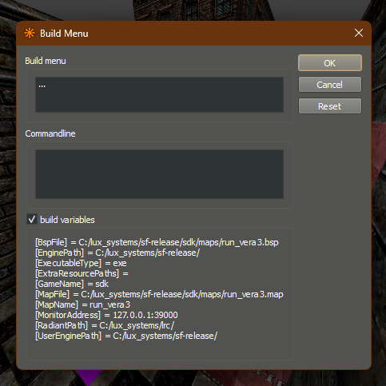

Runtime Map Building
There are times where you may want to build maps while in the middle of running your game, whether it's for loading levels from map files instead of scenes, procedural generation, or as a way to support user-made maps. Runtime map building can also be combined with map editor launch configurations to provide a largely seamless experience between making a map and seeing it in-game.
Setting up Runtime Map Building
To build a map at Runtime, start by either using a templated scene with an empty FuncGodotMap or instantiating one. Next you'll need to make sure to set either the local_map_file or global_map_file to your map's file path. Don't use load() here! That will be taken care of in the next step.
Once your map file path has been set, you can run the verify_and_build() method from the FuncGodotMap node. When this is done, your map will be built just as it would have been by pressing the Build button in the Editor, along with all of the entity callbacks. Be aware that the Engine.is_editor_hint() conditional will return as false, in case you use it to control properties handling through the FuncGodot entity callbacks.
When the map builds, it will emit the signals build_complete or build_failed. You can use these signals to handle errors gracefully handle errors gracefully and to run any post-build code you need to run.
If using LightmapGI for your global illumination solution, you can use the FuncGodotMap node's unwrap_uv2() method after receiving the build_complete signal. Once unwrapping has finished, the FuncGodotMap node will emit unwrap_uv2_complete.
NOTE: Godot 4.2 does not currently support runtime lightmap baking or UV2 unwrapping in exported builds. For now, consider using a different lighting solution for runtime building.An example of runtime map building is as follows:
extends Node
@onready var func_godot_map := $FuncGodotMap as FuncGodotMap
# We can connect the various build signals of the FuncGodotMap
# in order to add more functionality after building.
func _ready():
func_godot_map.connect("build_complete", _build_complete)
func_godot_map.connect("build_failed", _build_failed)
func_godot_map.connect("unwrap_uv2_complete", _unwrap_uv2_complete)
func_godot_map.local_map_file = "res://maps/runtime_building.map"
func_godot_map.verify_and_build()
# We need to wait for the build to finish before unwrapping mesh UV2s for lightmap baking.
# Currently lightmap baking cannot be performed at runtime, so it's not terribly useful yet.
# Consider creating a procedural Voxel GI solid class entity that can be baked at runtime instead.
func _build_complete() -> void:
print("Success! Unwrapping UV2...")
func_godot_map.unwrap_uv2()
func _build_failed() -> void:
printerr("Failed to build the map file! :(")
func _unwrap_uv2_complete() -> void:
print("UV2 unwrapping completed!")An example of this can be found in func_godot_runtime_building repository.
Building from Map Editors
Much like idTech engine games, it's possible to build and launch directly into a map from NetRadiant Custom and TrenchBroom alike. This can be quite a helpful tool for mappers to quickly try out their creations without a lengthy startup or debug menu process.
Godot project setup example
Regardless of which map editor you use, you'll need to check for any command line arguments.

# Somewhere in a script called when your project opens. Make sure you have a
# valid reference to a FuncGodot map or create one and apply your map settings to it.
var func_godot_map: FuncGodotMap
var map_override: String
var cmd_line_args := OS.get_cmdline_user_args()
for arg in cmd_line_args:
# Example argument, with a known delimiter.
if arg.contains("launch_debug::"):
var split := arg.split("::")
# Basic input validation
if split.size != 2:
return
map_override = arg.split("::")[1]
func_godot_map.local_map_file = map_override
func_godot_map.verify_and_build()Editor setup
TrenchBroom
The TrenchBroom documenation covers this. You configure an engine you can run from which is its executable, and you pass a parameter to it, which is the map file. Trenchbroom provides variables for finding the path of the map file.
NetRadiant Custom
NetRadiant itself provides some basic scripting for this process, defined in the gamepack folder.
The path to our default build profiles can be found in your NetRadiant gamepack folder. This is something defined in your
NetRadiantCustomGamePackConfig.
IF you haven't set this up, you'll need to first complete creating your NetRadiantCustomGamePackConfig.
We'll use an example from Sinewave's game SLAMFIRE: <path_to_radiant>\gamepacks\sfbase.game\default_build.xml.
First, in Radiant, navigate to
Build > Customize....
Here, we can see some build variables available:

<?xml version="1.0"?>
<project version="2.0">
<var name="game">"[EnginePath]sf.[ExecutableType]"</var>
<build name="Test map in engine">
<command>[game] -- launch_debug::"[MapFile]"</command>
</build>


NOTE: Where an executable is listed, you can provide the path to Godot Game engine with a parameter of the path to your Godot project. Alternatively you can also use exported executables.